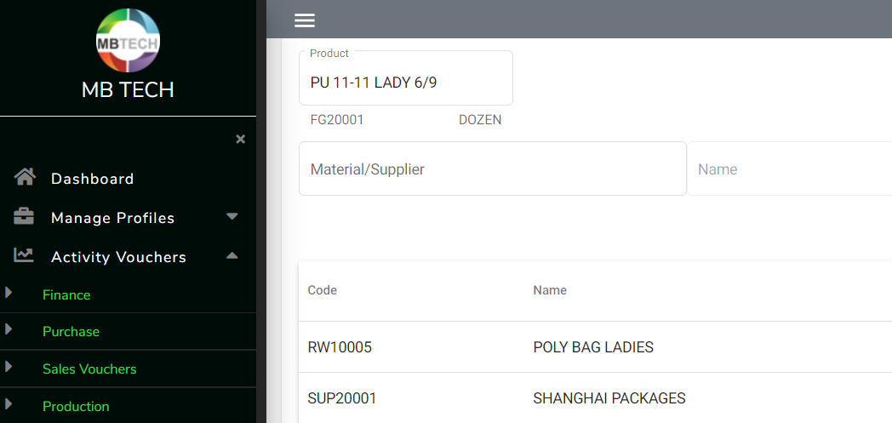

An "Enterprise Resource Planning" system,
aligning financial management, human resources, supply chain management,
manufacturing and distribution with the core function of accounting.
TECHNOLOGIES
.NET Core
Angular Framework
ASP.NET
MSSQL
SAP Crystal Reports
Bootstrap
SERVICES
Project Management
Frontend Development
Backend Development
Deployments & Hostings
Overview
This PWA analyses data through integrated Finance Management, Purchase, Sales,
Production & Inventory departments to provide real-time visibility into all corners of the business,
as well as advanced reporting to enable confident and timely decision making.
Regarding the HR department, the app covers features like employee's finance, salary slips, reports,
advance payments, overtime, attendance etc.
Key Challenges
Directly after 2 months of tutorials from MDN, Angular Docs and some Blogs to quickly start-up
the backend part of the app, I started developing with this project as my first.
With so many aspects in mind, the app structuring was the first challenge.
Some of the other technical challenges were securing the API, State Control using singleton Services,
asynchronous task processing, SAP crystal reports incorporation using FOC tools, deployments on various
platforms (Azure, IIS, smarterasp.net, firebase, netlify ...).

Development & Tools
The frontend is developed using Angular framework, .Net Core is used to connect to the
MSSQL database and to create resources, also ASP.NET is used to read and export reports made
in SAP Crystal Reports.
In terms of languages, the code marked up by HTML has been decorated through CSS and Bootstrap,
TypeScript & JavaScript has brought the logic to the frontend under Angular Framework, C# has taken
care of the backend and SQL Queries & LINQ to analyse data.
The app was first deployed and hosted in Azure and later-on was shifted to a personal server of
the company through IIS.
Local storage, Session storage, Singleton Services are used to store and handle the data on the client side.
A Splash screen showing log is used with "Resolver" to load the data and dashboard on the app start.
Ngx-charts to enhance the view of the landing page.
Angular material has brought the elegance, specially to sortable paginated tables.
Frontend routes has been secured by guard and http interceptor, the user is validated through JWT.
Also a 20 minutes inactivity logout at the client side and a 2 hours token expiration has been added.
For the web, manifest.webmanifest has personalized the app installation,
also a manual installation prompt and instructions has been added.
An APK of the app has also been developed using cordova.
Timeline
Project kick-off was the mid-July, 2020.
Several months later, in December 2020, the app, with 70%+ Pitch Management flow ready,
was shifted to the Q&A for bug triage and a detailed testing.
This is when unfortunately we had to pause the project due to the financial crises caused
by the pandemic. Therefore, a new smaller project was renegotiated for the client who was already
using the desktop version of this ERP, a PWA with Executive dashboard & Reports.